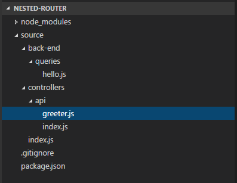
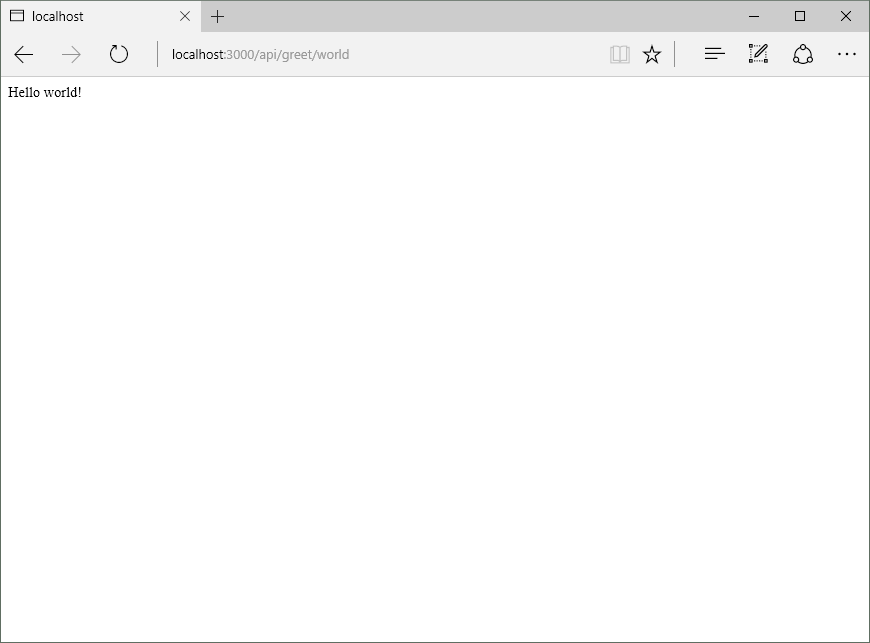

Express route management
Setting up a webserver with Node and Express is easy very easy.
Here is a small example:
var express = require("express"); var app = express();
app.get("/", function (request, response) { response.send("Hello world!"); });
app.listen(3000);
Running this and navigating to http://localhost:3000 will give you the following result:
If you only have a few of those endpoints (app.get etc.) things will be fine living in the same index.js file. But what if this starts growing? You add more and more endpoints to your index.js and before you know it you have a 1500 line Javascript mess. Here is a good way of tackling that problem before it rears its head.
Express exposes a Router that you use to register... routes :-). This router can be passed back to express (as middleware) to link routes together using these routers. By nesting the routers we can separate every route into it's own folder or even file if we want.
We'll be creating a simple web API that will greet you. Here is my file structure.

Let's start with the basics, we need code that will format the greeting text, this lives in the back-end\queries\hello.js file.
exports.formatGreeting = function (name) { return "Hello " + name + "!"; }
The next step is creating the controller that will call this code when a request comes in on the API. The receiving endpoint lives in greeter.js.
var router = require("express").Router(); var hello = require("../../back-end/queries/hello");
router.get("/", function (request, response) { response.send("Hello!"); });
router.get("/:name", function (request, response) { response.send(hello.formatGreeting(request.params.name)); });
module.exports = router;
We import the express module because we want to hook up endpoints to code and the hello module we created above to greet us. Instead of using the base of express we instantiate a router from it on which we create the endpoints. Notice how we only specify the last part of the route (/ and /:name), we'll look at why in a bit. So we have an endpoint that returns Hello! if the :name parameter is not supplied and an endpoint that will return Hello <value of :name> if the :name parameter is supplied.
The last line is very important, we export the entire router we created as the module, this let's us use the module as a router later.
In the same folder as greeter.js sits an index.js file:
var router = require("express").Router();
router.use("/greet", require("./greeter"));
module.exports = router;
First, another router is created, this lets us define new routes. The /greet route is added to the router and we import the greeter module we created above. Remember that we exported the entire router from that module? Express now consumes that module as a router creating the routes /greet and /greet/:name in the process. The last step is exporting the newly created router again.
Moving up to the root index.js file where the web app is started by node, we find the following code:
var express = require("express"); var app = express();
app.use("/api", require("./controllers/api"));
app.listen(3000);
We create an express app and create the /api route on it which we set to the router we created in the api folder. This creates the routes /api/greet and /api/greet/:name for us.
Run the app from the command line using node ./source and browse to http://localhost:3000/api/greet and http://localhost:3000/api/greet/world.

So why go through all this trouble? Adding a route is now trivial and it will not polute any existing files if you don't want it to. You can extend from any level by added new routes to the routers thate live at any level.
Want to add a route that says goodbye? Let's do it!
Create a file called leaver.js in the api folder with the following code.
var router = require("express").Router();
router.get("/", function (request, response) { response.send("Bye!"); });
module.exports = router;
Next, open the index.js file in the api folder and add the following line below the other app.use(...) call.
router.use("/leave", require("./leaver"));
Run the app again and browse to http://localhost:3000/api/leave.
You can extend this as deep as you want on as many files and folders as you like. Routes are very portable now as all it takes is hooking them up to another router. Added new routes is a breeze as you saw above.
No more 1000 line index.js files! Enjoy!
Demo code can be found here.